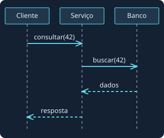
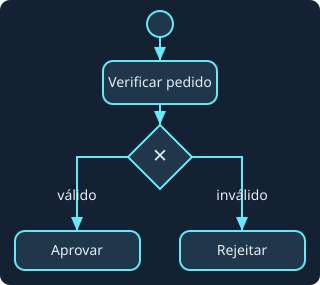

CASAN 2026 · AOCP · Cargo 404 · Prova 03 · Português e Tecnologia da Informação · 24/11/2026
Revisão dirigida CASAN → IMA — questões comentadas
19 questões selecionadas na revisão anterior por relação com o edital IMA. Leia a questão reconstruída, a letra registrada, a teoria, o exemplo e as armadilhas. O caderno original e o gabarito oficial não puderam ser recuperados nesta edição; enunciados e explicações são reconstruções didáticas, não transcrições, e as letras são as da revisão anterior, ainda sujeitas à conferência e recursos. A leitura não registra avaliação.
Módulo 1 de 7
Português
1.1 · Questão 3 — Regência verbal e crase
Questão em formato de estudo (enunciado reconstruído, não transcrição literal): Qual verbo admite a construção com crase antes de «saúde pública» no contexto de regência verbal?
Gabarito registrado: C — Chegar: chegar à saúde pública.
Crase: Funde a preposição a com o artigo feminino a.
Chegar: No sentido de atingir um destino, rege a preposição a.
Afetar, comprometer, prejudicar e ferir: Recebem objeto direto nesse contexto: afeta a saúde, sem acento grave.
Exemplo resolvido · 1.1
Situação: Aplicação do conceito
Substitua saúde por serviço. Chega ao serviço → chega à saúde. Afeta o serviço → afeta a saúde.
Conclusão: O verbo chegar exige preposição a: chega a + a saúde pública = chega à saúde pública. Afetar, comprometer, prejudicar e ferir são transitivos diretos nesse contexto.
Armadilha de prova: A presença de substantivo feminino não é suficiente: a regência deve exigir a preposição.
Para lembrar: Rever regência verbal e testar separadamente a exigência de preposição e a presença do artigo feminino. Conexão curricular IMA: Regência verbal e nominal; crase
1.2 · Questão 8 — Orações consecutivas
Questão em formato de estudo (enunciado reconstruído, não transcrição literal): Qual relação semântica é expressa pela construção tão… que?
Gabarito registrado: C — Consequência.
Oração consecutiva: Exprime o efeito de uma intensidade anterior.
Tão: Em «o déficit é tão amplo que afeta a saúde», intensifica amplo.
Que: Introduz a oração que apresenta a consequência.
Exemplo resolvido · 1.2
Situação: Aplicação do conceito
Compare: «A saúde foi afetada porque há déficit» (causa) e «O déficit é tão amplo que afeta a saúde» (consequência).
Conclusão: A construção tão ... que marca consequência: o déficit é tão amplo que afeta a saúde. Pois, porque e uma vez que apresentam causa.
Armadilha de prova: Porque e uma vez que normalmente introduzem causa; embora introduz concessão, se indica condição.
Para lembrar: Comparar causa, consequência, concessão, condição e finalidade em 10 períodos. Conexão curricular IMA: Relações sintático-semânticas; conectivos
1.3 · Questão 10 — Pontuação e siglas
Questão em formato de estudo (enunciado reconstruído, não transcrição literal): Qual é a função dos parênteses ao apresentar uma sigla depois do nome por extenso?
Gabarito registrado: A — Introduzir a sigla correspondente ao nome da instituição.
Nome expandido: Identifica a organização.
Sigla entre parênteses: Permite referências posteriores mais curtas.
Aspas: Podem demarcar uma fala citada literalmente; não desempenham a mesma função nesse caso.
Exemplo resolvido · 1.3
Situação: Aplicação do conceito
Instituto Trata Brasil (ITB): nas próximas menções, ITB remete ao instituto já identificado.
Conclusão: Os parênteses em Instituto Trata Brasil (ITB) introduzem a sigla correspondente ao nome expandido. Aspas em fala literal indicam citação direta.
Armadilha de prova: Não confunda parênteses explicativos com aspas de citação ou vírgulas de enumeração.
Para lembrar: Identificar parênteses, aspas, vírgulas de deslocamento e apóstrofo em fragmentos. Conexão curricular IMA: Pontuação e seus efeitos
Questão em formato de estudo (enunciado reconstruído, não transcrição literal): Qual descrição distingue corretamente rebase, cherry-pick, reset e stash no Git?
Gabarito registrado: A — A alternativa que caracteriza corretamente os comandos, conforme o gabarito registrado.
Rebase: Reaplica commits sobre outra base e normalmente cria novos identificadores.
Cherry-pick: Aplica a alteração de um commit escolhido.
Reset --hard: Move a referência atual para o commit indicado e atualiza o índice e a árvore de trabalho, podendo descartar alterações locais rastreadas.
Stash: Guarda alterações temporariamente para retomada.
Exemplo resolvido · 2.1
Situação: Aplicação do conceito
Você tem uma correção no commit X de outra branch. git cherry-pick X traz aquela alteração; git stash guarda trabalho local incompleto; git rebase main reaplica seus commits sobre main.
Conclusão: Rebase reaplica commits; cherry-pick seleciona um commit; reset --hard não envia mudanças automaticamente ao remoto; stash não cria commit permanente na branch.
Operações locais e publicação
Trabalho local
stash guarda alterações; reset muda o estado local.
Histórico
rebase reaplica; cherry-pick aplica uma alteração escolhida.
Remoto
push publica referências, quando permitido.
Os comandos não são equivalentes e não enviam alterações automaticamente.
Armadilha de prova: Reset e rebase locais não publicam alterações por si sós. Stash não cria um commit normal no histórico da branch; reset --hard pode descartar trabalho local.
Para lembrar: Simular rebase, cherry-pick, reset, stash e push em um repositório de teste. Conexão curricular IMA: Git, Gitflow e Trunk-Based Development
2.2 · Questão 29 — Sobrecarga versus interface
Questão em formato de estudo (enunciado reconstruído, não transcrição literal): Qual conceito de OO descreve métodos de mesmo nome com listas de parâmetros diferentes?
Gabarito registrado: C — Sobrecarga (overloading).
Sobrecarga: Diferencia métodos pela assinatura conforme as regras da linguagem.
Sobrescrita: Redefine um método herdado com assinatura compatível.
Interface: Estabelece um contrato.
Composição: Constrói comportamento com objetos colaboradores.
Exemplo resolvido · 2.2
Situação: Aplicação do conceito
Em Java, calcular(int x) e calcular(int x, int y) são sobrecargas. Uma subclasse que redefine executar() herdado está sobrescrevendo.
Conclusão: Métodos com o mesmo nome e parâmetros de tipos ou quantidades diferentes caracterizam sobrecarga (overloading). A alternativa interface não descreve escolha por assinatura.
Armadilha de prova: Alterar apenas o tipo de retorno não é suficiente para sobrecarregar em Java. Interface não é sinônimo de sobrecarga.
Para lembrar: Criar exemplos de overload, override, interface e composição. Conexão curricular IMA: Orientação a objetos e polimorfismo
2.3 · Questão 30 — REST, SOAP, gRPC e microsserviços
Questão em formato de estudo (enunciado reconstruído, não transcrição literal): Como classificar afirmações sobre REST, SOAP, gRPC, Protobuf e microsserviços?
Gabarito registrado: B — Sequência V–F–F–F, conforme o registro do caderno 03.
REST: É estilo arquitetural orientado a recursos e restrições, não protocolo.
SOAP: É protocolo de mensagens baseado em XML.
gRPC: É framework de chamadas remotas.
Protocol Buffers: É formato e mecanismo de serialização.
Microsserviços: Buscam serviços independentes e baixo acoplamento.
Exemplo resolvido · 2.3
Situação: Aplicação do conceito
Uma API REST pode expor GET /clientes/42; um serviço gRPC pode declarar rpc BuscarCliente; Protobuf define a mensagem Cliente, não a arquitetura do sistema.
Conclusão: A sequência é V–F–F–F: REST é estilo arquitetural; SOAP é protocolo de mensagens; gRPC é framework de RPC; Protobuf serializa mensagens; microsserviços buscam baixo acoplamento.
Armadilha de prova: Não troque formato de serialização por protocolo ou estilo arquitetural. A sequência depende das afirmações originais, não recuperadas nesta consulta.
Para lembrar: Montar tabela comparativa REST × SOAP × gRPC × Protobuf e monólito × microsserviços. Conexão curricular IMA: APIs RESTful, gRPC e arquitetura de serviços
2.4 · Questão 39 — Elicitação: etnografia
Questão em formato de estudo (enunciado reconstruído, não transcrição literal): Qual técnica de elicitação de requisitos envolve observar o trabalho real dos usuários em seu ambiente?
Gabarito registrado: D — Etnografia.
Observação etnográfica: Busca compreender práticas, contexto, exceções e conhecimento tácito.
Entrevistas: Coletam declarações.
Workshops: Promovem discussão coletiva.
Protótipos: Concretizam hipóteses de interface.
Exemplo resolvido · 2.4
Situação: Aplicação do conceito
Acompanhar um atendente durante uma manhã pode revelar que ele mantém uma planilha paralela porque o sistema não permite determinada busca.
Conclusão: Acompanhamento presencial e observação da rotina de trabalho, sem depender apenas de declarações dos usuários, caracterizam etnografia.
Armadilha de prova: Observar o trabalho real não equivale a apenas pedir ao usuário uma lista de requisitos.
Para lembrar: Distinguir entrevista, observação etnográfica, workshop, prototipação e questionário. Conexão curricular IMA: Elicitação, especificação e validação de requisitos
2.5 · Questão 45 — UML: diagrama de sequência
Questão em formato de estudo (enunciado reconstruído, não transcrição literal): Qual diagrama UML representa a troca de mensagens entre participantes ao longo do tempo?
Gabarito registrado: D — Diagrama de sequência.
Linhas de vida: Representam participantes e avançam temporalmente de cima para baixo.
Setas: Mostram mensagens.
Retornos: Podem ser representados por linhas tracejadas.
Diagrama de classes: Descreve estrutura.
Diagrama de atividades: Descreve fluxo.
Diagrama de casos de uso: Descreve objetivos de atores.
Exemplo resolvido · 2.5
Situação: Aplicação do conceito
Cliente envia consultar(42) ao Serviço; Serviço envia buscar(42) ao Banco; o Banco retorna dados; o Serviço responde ao Cliente.
Conclusão: O diagrama de sequência mostra interações entre objetos ao longo do tempo, com linhas de vida e mensagens. Casos de uso representam objetivos/atores; atividades mostram fluxos.
UML — diagrama de sequência

O tempo avança para baixo. Cada seta representa uma interação entre participantes.
Armadilha de prova: Uma sequência de mensagens não é simplesmente um diagrama de atividades, mesmo quando ambos descrevem comportamento.
Para lembrar: Comparar diagramas de sequência, atividade, estado, classe e casos de uso. Conexão curricular IMA: UML 2.x e modelagem
2.6 · Questão 48 — BPMN: gateway
Questão em formato de estudo (enunciado reconstruído, não transcrição literal): Qual elemento BPMN controla a divergência e convergência de caminhos de um processo?
Gabarito registrado: C — Gateway.
Gateway: É representado por losango.
Exclusivo (XOR): Escolhe um caminho.
Paralelo (AND): Abre ou sincroniza caminhos paralelos.
Inclusivo (OR): Permite um ou mais caminhos conforme condições.
Exemplo resolvido · 2.6
Situação: Aplicação do conceito
Após verificar um pedido, um gateway exclusivo encaminha para aprovar ou rejeitar. Um gateway paralelo pode iniciar faturamento e expedição em paralelo.
Conclusão: O gateway (losango) controla divergência e convergência de caminhos do processo. Evento indica ocorrência; atividade representa trabalho; fluxo de sequência liga elementos.
BPMN — gateway exclusivo

O losango com X indica gateway exclusivo: apenas um dos caminhos condicionais é escolhido.
Armadilha de prova: Evento é círculo; tarefa é retângulo de cantos arredondados; gateway é losango. Não confunda os três.
Para lembrar: Modelar um processo com gateway exclusivo, paralelo e inclusivo. Conexão curricular IMA: BPMN 2.0
Módulo 3 de 7
Desenvolvimento web
3.1 · Questão 27 — HTML5: elemento progress
Questão em formato de estudo (enunciado reconstruído, não transcrição literal): Qual elemento HTML5 representa o progresso da execução de uma tarefa?
Gabarito registrado: B — <progress>.
progress: Representa quanto de uma tarefa foi concluído.
meter: Indica um valor escalar dentro de limites conhecidos; não é indicador de andamento.
output: Apresenta o resultado de um cálculo.
summary: Rotula details.
track: Fornece faixas de texto para mídia.
Exemplo resolvido · 3.1
Situação: Aplicação do conceito
<progress value="60" max="100">60%</progress> indica uma tarefa 60% concluída. <meter value="60" max="100">60%</meter> pode indicar ocupação atual de um reservatório.
Conclusão: <progress> representa progresso de uma tarefa; <meter> representa medida escalar dentro de um intervalo. O requisito descreve execução percentual.
Elementos semânticos HTML
Elemento
Uso
progress
Andamento de tarefa
meter
Medida em intervalo
output
Resultado de cálculo
summary
Título de details
track
Faixas de mídia
Armadilha de prova: Porcentagem não implica progresso: a finalidade semântica do valor é decisiva.
Para lembrar: Distinguir progress, meter, output, summary e track com exemplos. Conexão curricular IMA: HTML5
3.2 · Questão 35 — Regex em JavaScript
Questão em formato de estudo (enunciado reconstruído, não transcrição literal): Qual metacaractere de expressão regular JavaScript corresponde a caracteres de palavra?
Gabarito registrado: B — \w.
\w: Em uso comum em JavaScript, corresponde a A–Z, a–z, 0–9 e sublinhado.
\d: Corresponde a dígitos ASCII.
\s: Corresponde a espaços e outros caracteres de espaço em branco.
+: Exige uma ou mais ocorrências.
$: Ancora o final.
Exemplo resolvido · 3.2
Situação: Aplicação do conceito
/\w+/.test('abc_42') retorna true. /^\d+$/.test('42a') retorna false. A regex ^\w+$ exige que toda a string tenha caracteres de palavra.
Conclusão: Em expressões regulares JavaScript, \w corresponde a caracteres de palavra (letras ASCII, dígitos e _ em uso comum); \d corresponde a dígitos, \s a espaços, $ ao final e + à repetição.
Armadilha de prova: \w não representa automaticamente todas as letras Unicode; letras acentuadas podem exigir propriedades Unicode, como \p{L} com flag u.
Para lembrar: Testar \w, \d, \s, quantificadores e âncoras usando RegExp. Conexão curricular IMA: JavaScript e processamento de texto
Módulo 4 de 7
Segurança
4.1 · Questão 28 — OWASP Top 10
Questão em formato de estudo (enunciado reconstruído, não transcrição literal): Qual denominação não pertence ao OWASP Top 10:2025 entre as categorias abordadas?
Gabarito registrado: E — Network Configuration Failures.
Broken Access Control: Falhas na autorização.
Security Misconfiguration: Configuração insegura.
Injection: Entrada interpretada como comando.
Cryptographic Failures: Falhas na proteção criptográfica.
Exemplo resolvido · 4.1
Situação: Aplicação do conceito
Um usuário acessa dados de outro alterando um ID: Broken Access Control. Uma senha padrão mantida em produção: Security Misconfiguration.
Conclusão: Network Configuration Failures não é uma categoria da lista OWASP Top 10:2025 citada pela questão; Broken Access Control, Security Misconfiguration, Injection e Cryptographic Failures pertencem à referência.
Armadilha de prova: Um nome tecnicamente plausível não é necessariamente categoria oficial. Observe a edição do Top 10 pedida.
Para lembrar: Revisar as dez categorias, riscos típicos e controles de prevenção. Conexão curricular IMA: OWASP Top 10 e segurança de aplicações
4.2 · Questão 37 — Criptografia simétrica e assimétrica
Questão em formato de estudo (enunciado reconstruído, não transcrição literal): Qual dupla é formada exclusivamente por algoritmos de criptografia simétrica?
Gabarito registrado: B — AES e ChaCha20.
Criptografia simétrica: Usa segredo compartilhado para cifrar e decifrar.
AES: É cifra de bloco.
ChaCha20: É cifra de fluxo.
RSA e ECC: RSA e esquemas baseados em ECC usam pares de chaves.
Hash: Produz resumo e não é cifragem reversível.
Exemplo resolvido · 4.2
Situação: Aplicação do conceito
Uma sessão pode usar troca de chaves baseada em ECC e depois cifrar tráfego com AES-GCM ou ChaCha20-Poly1305, combinando funções distintas.
Conclusão: AES e ChaCha20 são algoritmos de criptografia simétrica. RSA, ECC e ElGamal são associados à criptografia assimétrica; hash não é criptografia reversível.
Comparação criptográfica
Categoria
Exemplos
Propriedade
Simétrica
AES, ChaCha20
Segredo compartilhado
Assimétrica
RSA, ECC
Par de chaves
Hash
SHA-256
Resumo não reversível
Armadilha de prova: Não confunda algoritmo de hash com criptografia assimétrica, nem assinatura digital com sigilo.
Para lembrar: Comparar chaves, casos de uso, AES × RSA/ECC, hash e assinatura digital. Conexão curricular IMA: AES, RSA, ECC, funções hash e certificados
4.3 · Questão 43 — DevSecOps: Shift Left
Questão em formato de estudo (enunciado reconstruído, não transcrição literal): Qual estratégia de DevSecOps antecipa testes e verificações de segurança para fases iniciais do desenvolvimento?
Na revisão de um pull request, o pipeline executa SAST e SCA antes de permitir integração. Em homologação, executa DAST.
Conclusão: Shift Left antecipa verificações de segurança e testes para as etapas iniciais do ciclo de desenvolvimento. Monitoramento contínuo complementa essa postura, mas não define o deslocamento à esquerda.
Armadilha de prova: Blue-Green é estratégia de implantação; Shift Left não significa abandonar testes e monitoramento posteriores.
Para lembrar: Diferenciar SAST, DAST, SCA, CI/CD, Shift Left e monitoramento. Conexão curricular IMA: DevSecOps, SAST, DAST e SCA
Módulo 5 de 7
Infraestrutura e nuvem
5.1 · Questão 32 — IaaS, PaaS e SaaS
Questão em formato de estudo (enunciado reconstruído, não transcrição literal): Qual serviço exemplifica o modelo de nuvem PaaS?
Gabarito registrado: E — Heroku.
IaaS: Fornece recursos como máquinas virtuais, deixando ao cliente a gestão do sistema operacional.
PaaS: Oferece ambiente gerenciado para implantar código.
SaaS: Disponibiliza aplicação pronta para consumo.
Exemplo resolvido · 5.1
Situação: Aplicação do conceito
Google Compute Engine: VM (IaaS). Heroku: implantação gerenciada (PaaS). Gmail, Microsoft 365 e Dropbox: aplicações prontas (SaaS).
Conclusão: Heroku é exemplo tradicional de PaaS. Gmail, Microsoft 365 e Dropbox são SaaS; Google Compute Engine fornece infraestrutura virtualizada (IaaS).
Responsabilidade do cliente
Modelo
Cliente gerencia
Exemplo
IaaS
SO e aplicações
Compute Engine
PaaS
Aplicação e dados
Heroku
SaaS
Uso e configuração
Gmail
Armadilha de prova: Classifique pela responsabilidade operacional, não pela marca ou pelo fato de tudo estar na internet.
Para lembrar: Classificar serviços em SaaS/PaaS/IaaS e responsabilidades de cada modelo. Conexão curricular IMA: Nuvem: IaaS, PaaS, SaaS, AWS, Azure e GCP
5.2 · Questão 41 — Dockerfile: EXPOSE
Questão em formato de estudo (enunciado reconstruído, não transcrição literal): Qual instrução de Dockerfile documenta a porta em que um contêiner pretende escutar?
Gabarito registrado: C — EXPOSE.
EXPOSE: Declara metadados da porta pretendida, sem criar publicação automática no host.
RUN: Executa etapas de construção.
CMD: Fornece comando padrão.
ENTRYPOINT: Define o executável inicial.
COPY: Copia arquivos.
Exemplo resolvido · 5.2
Situação: Aplicação do conceito
EXPOSE 8080 documenta a porta. docker run -p 8080:8080 minha-imagem mapeia a porta do host para a porta do contêiner, se o serviço estiver escutando.
Conclusão: EXPOSE documenta a porta na qual o contêiner pretende ouvir. Não publica, sozinho, essa porta no host; o mapeamento pode ser feito com docker run -p.
Armadilha de prova: EXPOSE não é firewall nem substitui -p. A aplicação precisa efetivamente escutar a porta.
Para lembrar: Revisar FROM, WORKDIR, RUN, COPY, CMD, ENTRYPOINT, EXPOSE e -p. Conexão curricular IMA: Contêineres Docker e orquestração básica
Módulo 6 de 7
Banco de dados
6.1 · Questão 36 — SQL: DML versus DCL
Questão em formato de estudo (enunciado reconstruído, não transcrição literal): Qual par de comandos pertence respectivamente a DML e DCL?
Gabarito registrado: A — INSERT e REVOKE.
DML: Modifica dados: INSERT inclui linhas, UPDATE altera e DELETE remove.
DCL: Controla privilégios: GRANT concede e REVOKE revoga.
DDL: Define estruturas: CREATE, ALTER e DROP.
Exemplo resolvido · 6.1
Situação: Aplicação do conceito
INSERT INTO cliente(id) VALUES (1); inclui uma linha. REVOKE SELECT ON cliente FROM leitor; retira uma permissão previamente concedida.
Conclusão: INSERT manipula dados (DML), e REVOKE revoga permissões (DCL). CREATE, ALTER e DROP são típicos comandos DDL.
Famílias SQL
Família
Comandos
Finalidade
DML
INSERT, UPDATE, DELETE
Dados
DCL
GRANT, REVOKE
Privilégios
DDL
CREATE, ALTER, DROP
Estrutura
Armadilha de prova: DELETE remove registros, não a tabela; DROP TABLE remove a estrutura. SELECT pode ser classificado separadamente como DQL em algumas taxonomias.
Para lembrar: Organizar comandos por DML, DDL, DCL e executar exemplos em PostgreSQL. Conexão curricular IMA: SQL: DDL, DML e DCL
6.2 · Questão 38 — Concorrência e deadlock
Questão em formato de estudo (enunciado reconstruído, não transcrição literal): Como se chama a situação em que duas transações esperam indefinidamente pelos recursos bloqueados uma pela outra?
Gabarito registrado: C — Deadlock (impasse).
Transação T1: Mantém o recurso A e espera B.
Transação T2: Mantém B e espera A.
Dependência circular: Impede o avanço.
Resolução: O SGBD pode detectar o ciclo e abortar uma transação para liberar recursos.
Exemplo resolvido · 6.2
Situação: Aplicação do conceito
T1 atualiza cliente 1; T2 atualiza cliente 2; T1 tenta cliente 2 e T2 tenta cliente 1. Se houver bloqueios incompatíveis, forma-se o ciclo.
Conclusão: As duas transações retêm recursos e aguardam recursos detidos pela outra: espera circular, característica de deadlock. Integridade referencial trata de relacionamentos consistentes entre tabelas.
Ciclo de espera
T1
Detém A e espera B.
T2
Detém B e espera A.
Ciclo
Nenhuma pode prosseguir até romper o impasse.
O SGBD pode escolher uma vítima e desfazer sua transação.
Armadilha de prova: Um bloqueio simples pode ser resolvido quando a outra transação termina; o impasse exige dependência circular.
Para lembrar: Entender locks, isolamento, detecção/prevenção de deadlock e transações. Conexão curricular IMA: Transações ACID e concorrência
Módulo 7 de 7
Legislação e privacidade
7.1 · Questão 42 — LGPD: conservação após término
Questão em formato de estudo (enunciado reconstruído, não transcrição literal): Quais hipóteses legais permitem conservar dados pessoais após o término do tratamento, segundo a LGPD?
Gabarito registrado: E — Letra E no gabarito registrado; a revisão anterior aponta I, II e III como hipóteses corretas.
Obrigação legal ou regulatória: O art. 16 da LGPD permite conservação para seu cumprimento.
Pesquisa: Estudo por órgão de pesquisa, garantida sempre que possível a anonimização.
Transferência a terceiro: Permitida conforme requisitos legais.
Uso exclusivo do controlador: Vedado acesso por terceiro, desde que os dados sejam anonimizados.
Exemplo resolvido · 7.1
Situação: Aplicação do conceito
Uma obrigação legal de guarda pode impedir exclusão imediata. Já conservar dados identificados indefinidamente por mera conveniência não se enquadra automaticamente nas exceções.
Conclusão: O art. 16 admite conservação para cumprimento de obrigação legal/regulatória, estudo por órgão de pesquisa com anonimização quando possível e transferência a terceiro conforme a lei. A hipótese IV da questão não integra esse rol.
Armadilha de prova: O inciso IV da lei existe. Não confunda com a assertiva IV da questão original, cujo texto não está disponível; a combinação de assertivas precisa ser conferida no caderno.
Para lembrar: Estudar art. 15 e 16, bases legais, finalidade, minimização e setor público. Conexão curricular IMA: LGPD e proteção de dados no setor público